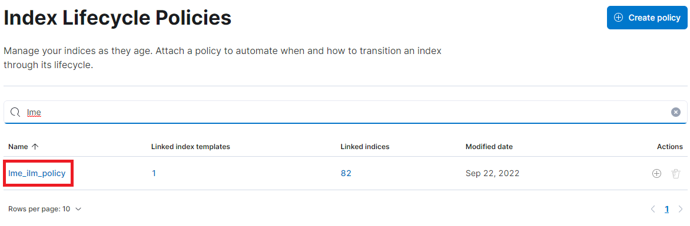
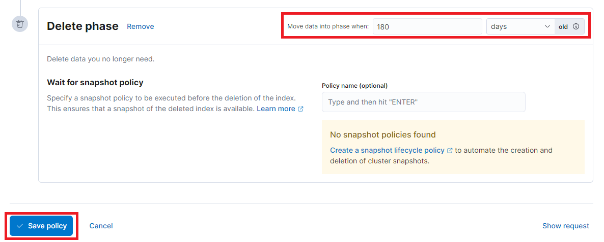

Retention Settings
By default, LME will configure an index lifecycle policy that will delete indexes based on estimated disk usage. Initially, 80% of the disk will be used for the indices, with an assumption that a day of logs will use 1Gb of disk space.
If you wish to adjust the number of days retained,do this in kibana.
First, select the lme_ilm_policy from the "Index Lifecycle Policies"
list:

Next, scroll to the bottom of the settings page and adjust the "Delete phase" setting as appropriate.

Users must ensure that the retention period is appropriate for the
disk space available. If disk space is exhausted then the solution will
experience performance issues and new logs will not be recorded. By default,
Elasticsearch will not allocate shards to any nodes that are using 85% or more
of the available disk space. See the
Elasticsearch
documentation
(the cluster.routing.allocation.disk.watermark.low setting in particular) for
more information.
Click the "save policy" button and the new setting will apply to the LME indices. Immediately,ensure that the new policy does not result in unwanted data loss by reducing the retention period, which would cause existing logs to be deleted.